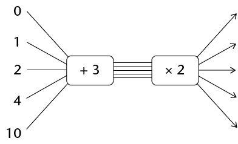
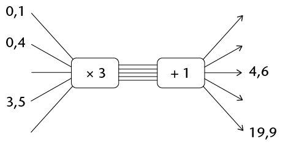
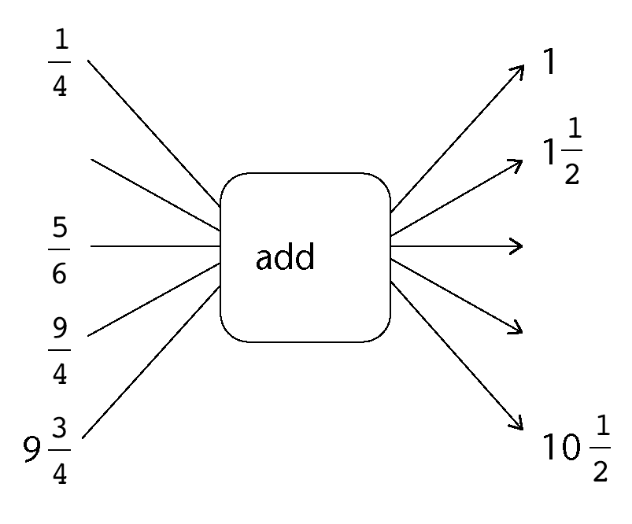

Term revision and assessment
Revision
You should not use a calculator for any of the questions in this chapter, unless you are told to use one. Do show all your steps of working.
Fractions
-
Calculate the following:
- \(3\frac{2}{5} + 2\frac{4}{5}\)
- \(4\frac{1}{3} - 3\frac{5}{6}\)
- \(\frac{13}{4} - \frac{4}{3}\) (give your answer as a mixed number)
- \(2\frac{1}{3} \times 1\frac{1}{14}\)
- \(3\frac{2}{5} + 2\frac{4}{5}\)
-
Three quarters of a number is 63. What is the number?
-
Write down all the fractions in this list that are smaller than one eighth: \( \frac{2}{8}; \frac{1}{7}; \frac{1}{9}; \frac{2}{17}\)
-
The Stone Hill Primary U13A soccer team had a good season, winning five sixths of its matches. If the team played 12 matches that season, how many were lost?
-
For each sequence below, write down whether it is increasing, decreasing, or neither:
- \(\frac{1}{3}; \frac{1}{4}; \frac{1}{5}\)
- \(\frac{1}{3}; \frac{2}{6}; \frac{3}{9}\)
- \(\frac{1}{6}; \frac{2}{7}; \frac{3}{8}\)
- \(\frac{4}{3}; \frac{5}{4}; \frac{6}{5}\)
- \(\frac{1}{3}; \frac{1}{4}; \frac{1}{5}\)
-
In a survey of 80 Grade 7 learners, 60% felt that Justin Bieber was the best singer. How many learners think he is the best singer?
-
Moeketsi collected R450 of the total of R3 000 collected by his class for the ABC for Life charity. What percentage of the total did Moeketsi collect?
-
BestWear had a sale on all its dresses. What was the percentage reduction on a dress that used to cost R600, but on sale was going for R480?
The decimal notation for fractions
-
Re-order the following numbers from smallest to largest:
-
0,04; \(\frac{4}{10}\); 14%; 0,4%
-
0,798; 0,789; 0,8; 0,79
-
-
What is the value of the 7 in 4,5678? Write your answer as a common fraction.
-
Fill in the missing numbers in the boxes below.
-

- \(9,123; 9,121; ☐; 9,117; ...\)
-
-
Join all the pairs of numbers that multiply together to give 1. The first has been done for you. Note that you will not use all the numbers on the right-hand side.

-
Calculate the following:
- \(5,673 - 3,597\)
- \(4,85 \times 1,2\)
- \(4,825 \div 5\)
- \(5,673 - 3,597\)
-
A certain portion of the shapes below are shaded. Write each portion as a common fraction (in simplest form), decimal fraction and percentage.


Relationships between variables
-
-
Here is a number sequence: 1; 4; 10; 22; ______; ______
The rule for creating the number sequence is "times 2, add 2". Write down the next two numbers in the number sequence.
-
Here is another number sequence: 100; 50; 25; ______
Write down, in words, the rule for creating this number sequence.
-
-
Use the given rule to calculate the missing values and/or determine the rule.
- 
- 
- 
-
-
There is a simple relationship (multiply by ...) between the \(y\) values and the \(x\) values in the table. Find it and then fill in the missing values.
\(x\)
0,1
0,3
0,6
2,5
3,2
\(y\)
4
12
24
164
-
Write in words the rule that describes the relationship between the \(x\) values and the \(y\) values.
-
-
-
There is a simple relationship (add ...) between the \(x\) values and the \(y\) values in the table. Find the relationship and then fill in the missing values.
\(x\)
\(\frac{1}{3}\)
\(\frac{5}{3}\)
\(\frac{7}{3}\)
\(9\frac{2}{3}\)
\(\frac{5}{6}\)
\(\frac{3}{4}\)
\(y\)
\(\frac{2}{3}\)
2
\(\frac{8}{3}\)
15
\(\frac{13}{12}\)
-
Write in words the rule by which the missing \(x\) and \(y\) values can be calculated.
-
-
The rule used to describe the relationship between the \(x\) values and \(y\) values in the table is "double the \(x\)and then subtract 2". Use the rule to find the missing values and fill them in.
\(x\)
4
8
12
15
\(y\)
6
14
42
100
Perimeter and area of shapes
-
-
A rectangle has an area of 48 cm2 and a length of 8 cm. How wide is it?
-
A different rectangle has an area of 72 cm2, and is twice as long as it is wide. Determine the dimensions of this rectangle.
-
A triangle has a base of 10 cm and an area of 20 cm2. What is the height of the triangle?
-
What is the length of the side of a square that has an area of 144 cm2?
-
-
An equilateral triangle with sides of 8,4 cm and a square have the same perimeter. Determine the length of the side of the square.
-
Calculate the area of the shaded figures.
-
DEFG is a rectangle. Dimensions of the sides are as indicated.

-
ABCD is a rectangle. AB = 5 cm and FC = 2 cm. Give your answer in square millimetres. (You may use a calculator in this question.)

-
-
The garden of Mr and Mrs Mbuli is shown below, not to scale. There is a hedge all around the garden, except for the 2 metre wide gate (from A to B). The shaded area is grassed (the rest has trees, shrubs etc.).
Garden Dream quoted the Mbulis R5 per square metre to mow their lawn and R10 per metre to trim their hedge. VAT is included in these prices. What was the total amount that Garden Dream quoted?

Surface area and volume of objects
-
How many litres of water will a fish tank with inside measurements of \(1,2 \text{ m} \times 60\text{ cm} \times 70 \text{cm}\) hold, if it is filled to the brim?
-
A rectangular prism has a length of 4 cm, a width of 10 cm and a volume of 240 cm3. What is the height of the prism?
-
A rectangular prism has a certain volume. Which of the following will double the volume of the prism? Tick the correct answer(s).
☐ Doubling all the dimensions
☐ Doubling the length only
☐ Doubling the length and the width, and halving the height
☐ Doubling the length and halving the width and keeping the height unchanged
-
Look at the diagram below of a rectangular prism made out of 16 cubes.

Draw on the same grid two different rectangular prisms with the same volume as the one shown.
-
The total surface area of a cube is 150 cm2. Determine the volume of the cube.
-
The volume of a cube is 64 cm3. Determine the total surface area of the cube.
-
In order to save water when flushing the toilet, Mrs Patel added a solid brick to the cistern. The internal dimensions of the cistern are \(30 \text{cm} \times 30 \text{cm} \times 10 \text{cm}\), and the brick together with other internal mechanisms have a volume of 1 000 cm3.
-
Calculate how many litres of water the cistern holds if the water fills up to 5 cm below the top of the cistern.
-
Suppose the Patel family flush the toilet an average of 12 times a day. Use your calculator to determine how many kilolitres of water they will use by this means in one year.
-
-
Njabulo wishes to varnish the outside of a wooden chest that is in the shape of a rectangular prism. The bottom of the chest does not need to be varnished as it is on the ground. The chest is 1,5 m long, 50 cm wide and 80 cm high. Determine, in square metres, the total surface area that will need to be varnished.
-
The image below shows the net of a rectangular prism drawn on a grid. If each block on the grid is a square with a side length of 1 unit, calculate:

-
The total surface area of the prism
-
The volume of the prism
-
Assessment
In this section, the numbers indicated in brackets at the end of a question indicate the number of marks that the question is worth. Use this information to help you determine how much working is needed.
The total number of marks allocated to the assessment is 60.
Note: Do not use your calculator!
-
\(\frac{1}{4}\) is half of \(x\). What is the value of \(x\)?
-
The diagram alongside shows a square made up of blocks. Eight of these blocks have been shaded. Write, in its simplest form, the fraction of the square that is shaded.

-
- \(2\frac{2}{3} \times 1\frac{1}{2}\)
- \(\frac{13}{10} - \frac{5}{8}\)
- \(2\frac{2}{3} \times 1\frac{1}{2}\)
-
Mrs Baker has baked a cake. She has some ladies around for tea and they eat half the cake. Her son John eats a quarter of the rest of the cake. What fraction of the cake is left?
-
The price of petrol has risen from R8 per litre to R12 per litre over the past 2 years. Determine the percentage increase in the price.
-
The Cupidos moved home. In the move, 5% of their crockery got broken. They have 57 pieces of crockery left (unbroken). How many pieces broke in the move?
-
\(\frac{15}{400} = 0.0375; \frac{17}{400} = 0.0425; \frac{19}{400} = 0.0475\)
Using the above information, write down the decimal equivalents of the following fractions:
- \(\frac{21}{400}=\)
- \(\frac{22}{400}=\)
- \(\frac{13}{400}=\)
- \(\frac{21}{400}=\)
-
Multiply 56,76147 by 100 and round off your answer to two decimal places.
-
Buti goes to the store and buys two cooldrinks at R7,50 each and three packets of chips at R5,95 each. If he pays with a R50 note, how much change should he get?
-
Class 7A at Grace Primary School collects some money for 3 charities. If the total they collect is R823,80, and the money is allocated equally to each charity, how much will each charity receive?
-
Use the given rule to calculate the missing values:
-
There is a simple relationship (add ...) between the values of \(x\) and those of \(y\). Find the relationship and then write down the missing values into the table.
\(x\)
0,15
0,76
0,99
1,71
\(y\)
1,4
2,01
2,24
18,93
-
Write in words the rule by which the missing \(x\) and \(y\) values can be calculated.
-
-
The total area of the rectangle shown is 112 cm2. Determine the lengths of \(a\) and \(b\).

-
Below is a rectangle, with dimensions as shown. A square has the same perimeteras the rectangle below. How long is the side of the square?

-
The diagram shows a rectangle divided into a triangle and a trapezium. Calculate the shaded area, giving your answer in mm2 .

-
The length and width of a rectangle is doubled.
-
Tick the statement that is correct:
☐ The perimeter of the rectangle stays the same.
☐ The perimeter of the rectangle doubles.
☐ The perimeter of the rectangle increases but it is not possible to say exactly by how much.
-
Tick the statement that is correct:
☐ The area of the rectangle stays the same.
☐ The area of the rectangle doubles.
☐ The area of the rectangle triples.
☐ The area of the rectangle increases to 4 times what it was before.
-
Explain your answer to part (b).
-
-
A rectangular prism has a volume of 24 cm3. In the table below, write four possible dimensions that the prism may have. One possible combination has already been added. Note: do not consider, for example, a prism with length 6 cm, and height and width 2 cm to be different.
Length
Width
Height
2 cm
2 cm
6 cm
-
The inside of the boot of a car is in the shape of a rectangular prism, with length 1,2 m, width 70 cm and depth 40 cm. Determine the capacity of the boot in litres.
-
The volume of a cube is 27 cm3. Determine the surface area of the cube.
-
The length and breadth of a rectangular prism are both 4 cm, and its volume is 48 cm3. Determine the height of the prism.
-
Consider this net:

-
What is the name of the solid created if this net is folded?
-
Which corner will A touch when the solid is created: B, C or D?
-